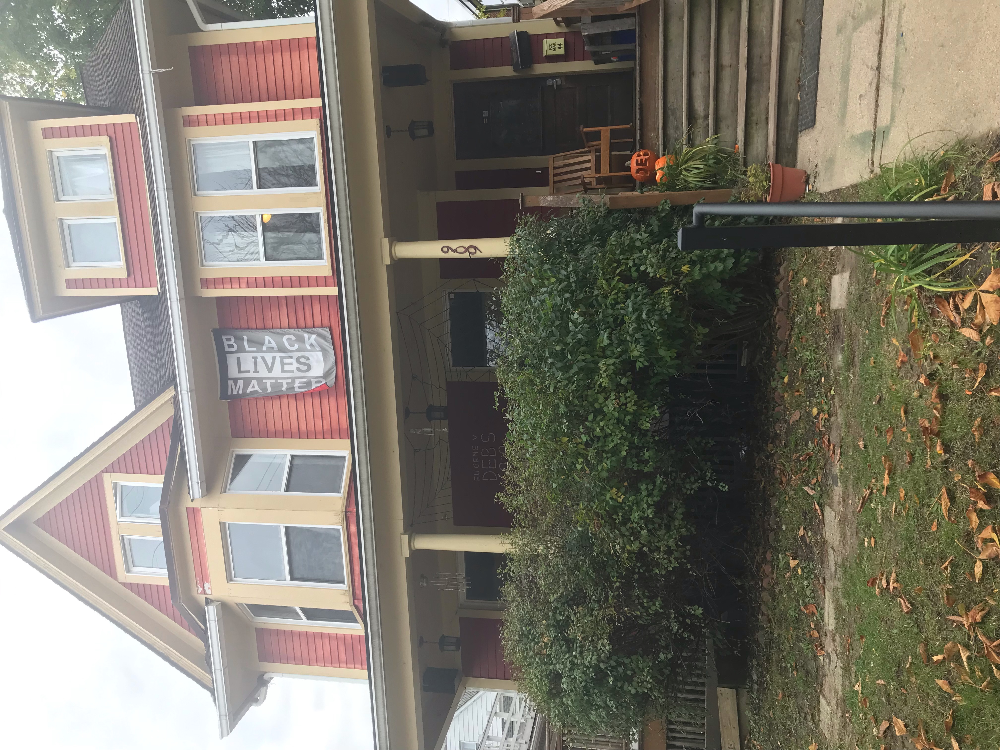
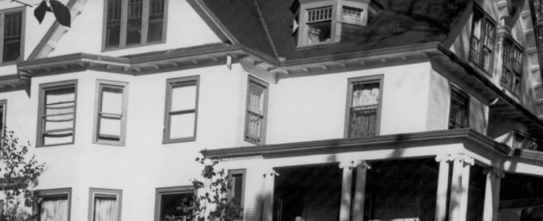
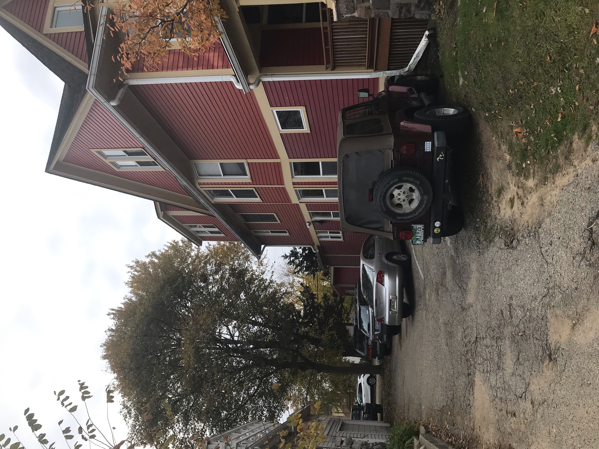
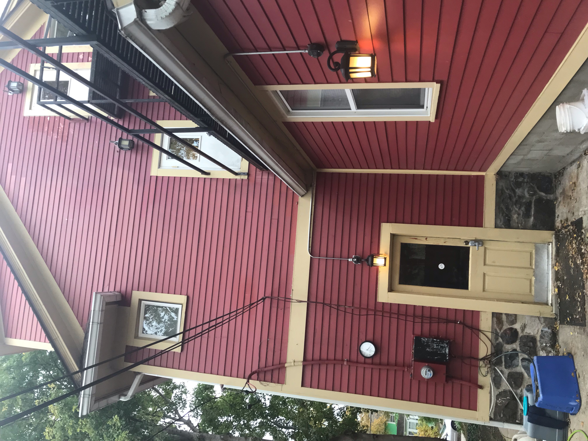
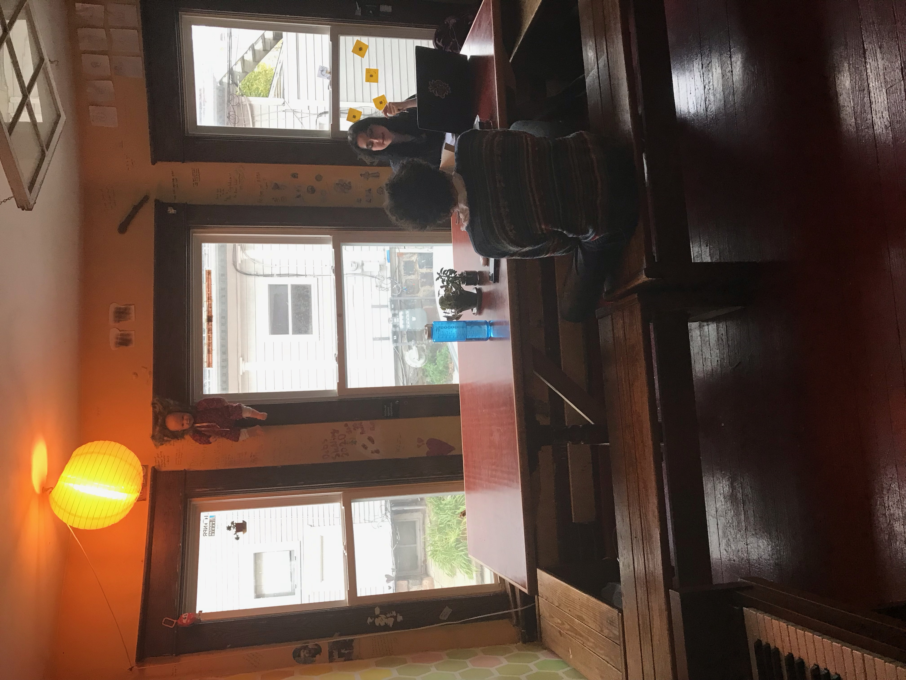
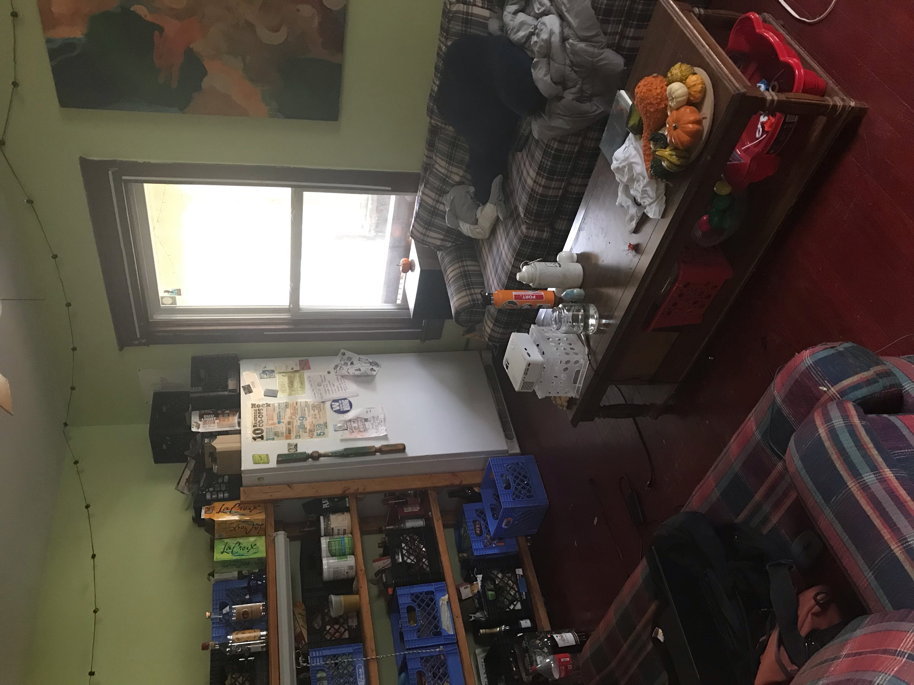
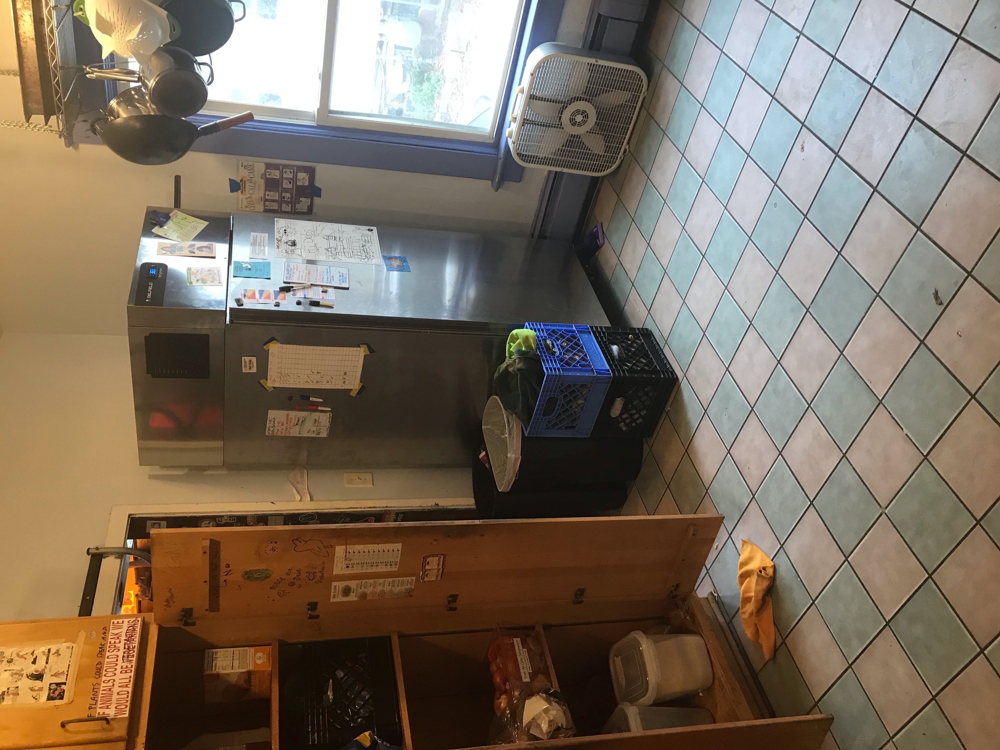
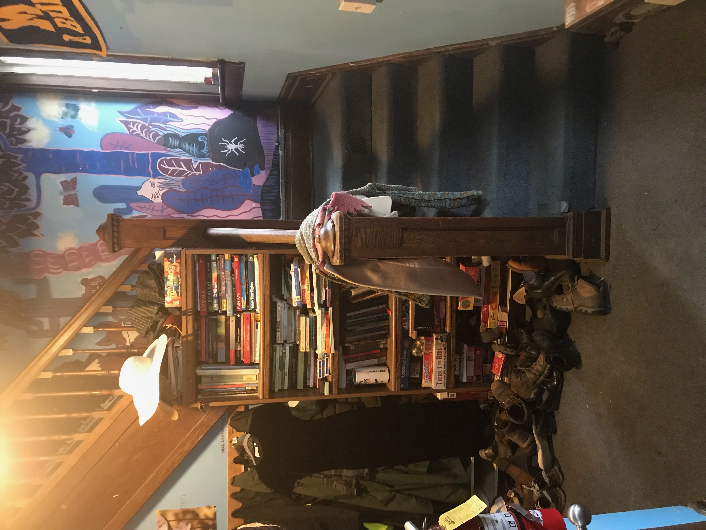
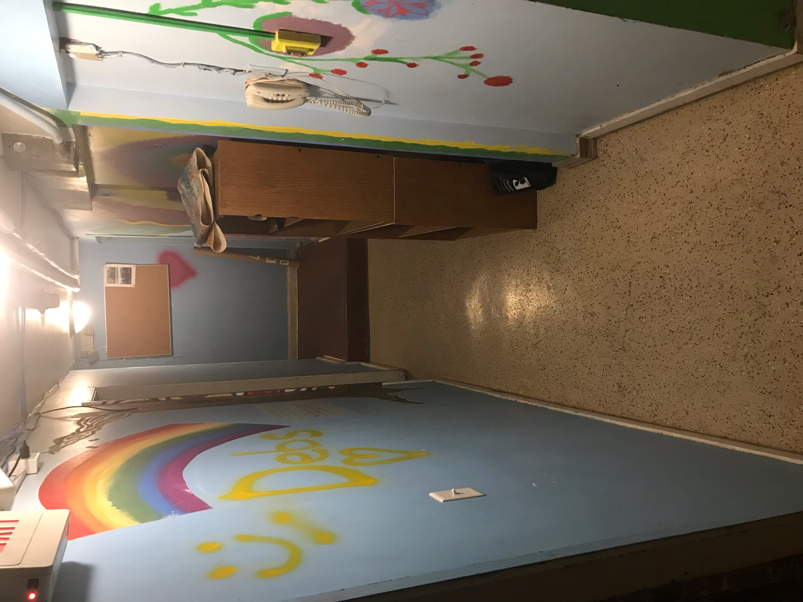
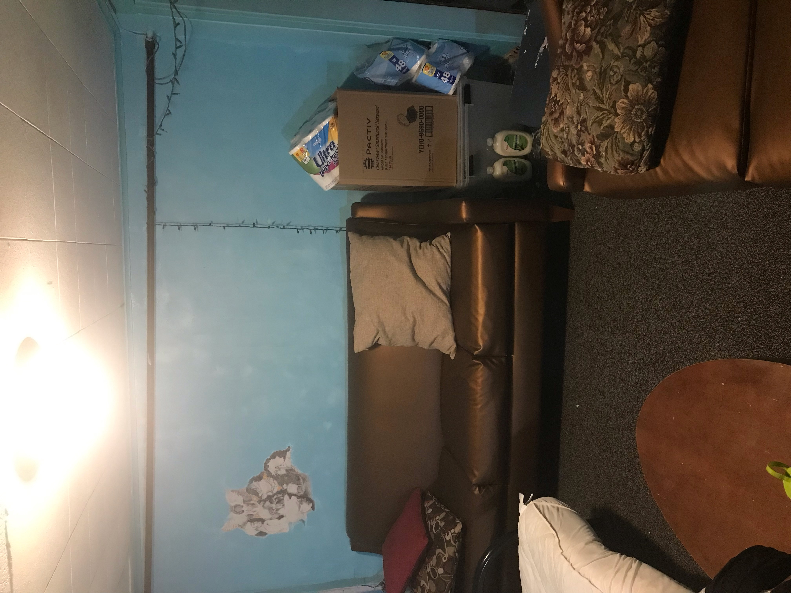

About our house!
The Eugene V. Debs Cooperative House is a member of the Intercooperative Council's network of co-op houses on UofM's campus. Our house is vegetarian, with a focus on sustainability and environmentalism!

History of the house
The house that would become Debs was built in 1905, almost over 100 years ago! In 1960, the house was bought by the intercooperative council and became the Eugene V. Debs house as it is known today.
Our insulation problem:
Because of our house's age, it's somewhat poorly insulated compared to more modern houses. This leads to more energy wasted and a higher heating bill. Pretty embarassing for an environmentalist house!
This semester, our sustainability stewards are going to try and winterproof Debs and hopefully help insulate the house better.
Pictures of the house







